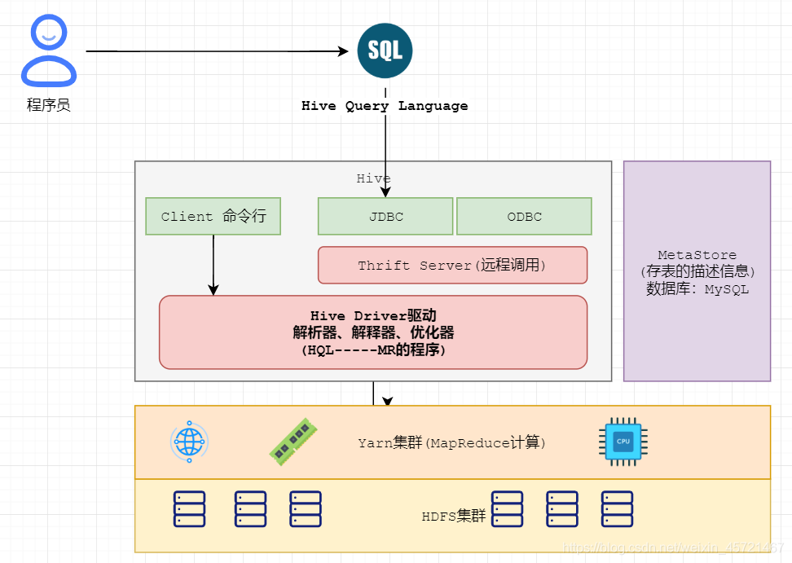
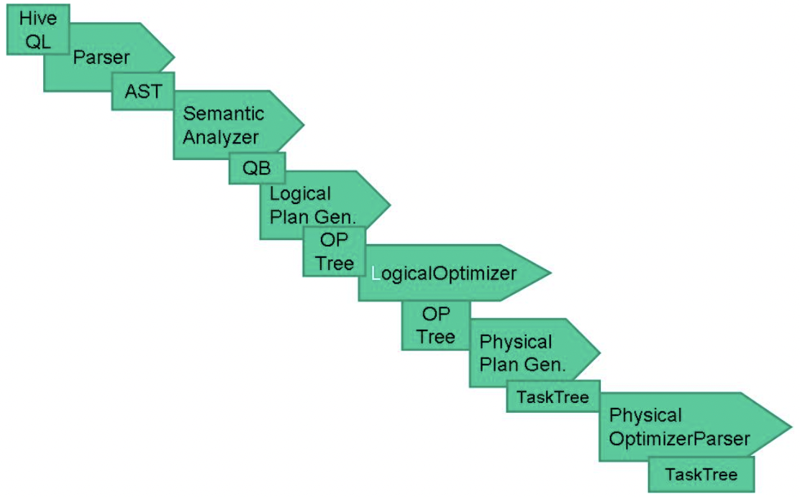

Hive
http://hive.apache.org/
The Apache Hive ™ data warehouse software facilitates reading, writing, and managing large datasets residing in distributed storage using SQL. Structure can be projected onto data already in storage. A command line tool and JDBC driver are provided to connect users to Hive.
一 部署结构
服务端
- HiveServer2
- Metastore
客户端
- hive
- beeline

二 安装
依赖
1 JDK
2 Hadoop
$HADOOP_HOME
目录
$ $HADOOP_HOME/bin/hadoop fs - mkdir /tmp
$ $HADOOP_HOME/bin/hadoop fs - mkdir /user/hive/warehouse
$ $HADOOP_HOME/bin/hadoop fs - chmod g+w /tmp
$ $HADOOP_HOME/bin/hadoop fs - chmod g+w /user/hive/warehous
配置
hive.metastore.warehouse.dir
3 Mysql
Server
jdbc jar
安装
所有版本下载
安装
$ tar - xzvf hive-x.y.z.tar.gz
$ cd hive-x.y.z
$ export HIVE_HOME={{pwd}}
$ export PATH=$HIVE_HOME/bin:$PATH
初始化
配置文件：$HIVE_HOME/conf/hive-site.xml
javax.jdo.option.ConnectionURL
javax.jdo.option.ConnectionDriverName
javax.jdo.option.ConnectionUserName
javax.jdo.option.ConnectionPassword
所有可配置项
$ wc - l $HIVE_HOME/conf/hive-default.xml.template
5959
初始化元数据库
$HIVE_HOME/bin/schematool - dbType
- initSchema
所有初始化脚本
# ls $HIVE_HOME/scripts/metastore/upgrade/
derby mssql mysql oracle postgres
# ls $HIVE_HOME/scripts/metastore/upgrade/mysql
hive-schema-0.10.0.mysql.sql
hive-schema-2.1.0.mysql.sql
hive-schema-2.3.0.mysql.sql
hive-txn-schema-2.1.0.mysql.sql
hive-txn-schema-2.3.0.mysql.sql
upgrade-0.10.0-to-0.11.0.mysql.sql
upgrade-2.1.0-to-2.2.0.mysql.sql
upgrade-2.2.0-to-2.3.0.mysql.sql
元数据库结构
版本
VERSION
元数据
DBS：数据库
TBLS：表
PARTITIONS：分区
COLUMNS_V2：列
SERDES：序列化反序列化
FUNCS：函数
IDXS：索引
权限
DB_PRIVS
TBL_COL_PRIVS
统计
TAB_COL_STATS
启动Metastore
启动进程metastore
$ $HIVE_HOME/bin/hive --service metastore
启动类
org.apache.hadoop.hive.metastore.HiveMetaStore
端口配置
hive.metastore.port : 9083
配置
hive.metastore.uris
javax.jdo.option.*
启动HiveServer2
启动进程hiveserver2
$ $HIVE_HOME/bin/hiveserver2
$ $HIVE_HOME/bin/hive --service hiveserver2
启动类
org.apache.hive.service.server.HiveServer2
端口配置
hive.server2.thrift.port : 10000
HA
Metastore
配置
hive.metastore.uris
HiveServer2
配置
hive.server2.support.dynamic.service.discovery
hive.server2.zookeeper.namespace
hive.zookeeper.quorum
URL
jdbc:hive2://zkNode1:2181,zkNode2:2181,zkNode3:2181/;serviceDiscoveryMode=zooKeeper;zooKeeperNamespace=hiveserver2
三 客户端
hive
客户端命令
$ $HIVE_HOME/bin/hive
启动类
org.apache.hadoop.hive.cli.CliDriver
run->executeDriver
直接执行sql
hive - e "$sql"
hive - f $file_path
beeline
客户端命令
$ $HIVE_HOME/bin/beeline - u jdbc:hive2://$HS2_HOST:$HS2_PORT
四 其他
执行引擎
配置
hive.execution.engine
可选
- mr
- spark
- tez
外部表
create external table * ();
内部表与外部表的差别
location
drop table
用途
- 数据安全
- 可以方便的访问外部数据：hbase、es
存储格式、压缩格式
SERDE
- Serialize/Deserilize
存储格式
- 行式
- textfile（原生、csv、json、xml）
- 用途：原始数据导入
- 列式
- orc
- parquet
- 用途：查询
压缩格式
- lzo
- snappy
不同格式与SERDE
csv
org.apache.hadoop.hive.serde2.OpenCSVSerde
json
org.apache.hive.hcatalog.data.JsonSerDe
xml
com.ibm.spss.hive.serde2.xml.XmlSerDe
parquet
org.apache.hadoop.hive.ql.io.parquet.serde.ParquetHiveSerDe
orc
org.apache.hadoop.hive.ql.io.orc.OrcSerde
hbase
org.apache.hadoop.hive.hbase.HBaseSerDe
数据导入
文件导入
普通表
hive
LOAD DATA LOCAL INPATH ${local_path} INTO TABLE ${db.${table};
LOAD DATA INPATH ${hdfs_path} INTO TABLE ${db.${table};
hdfs
hdfs dfs - put ${filepath} /user/hive/warehouse/${db}.db/$
分区表
hive
LOAD DATA LOCAL INPATH ${local_path} INTO TABLE ${db}.${table} partition(dt='${value}');
hdfs
hdfs dfs - mkdir /user/hive/warehouse/${db}.db/${table}/dt=${value}
hdfs dfs - put ${filepath} /user/hive/warehouse/${db}.db/${table}/dt=${value}
msck repair table ${db}.$
数据库导入
sqoop
spark-sql
datax
kettle
flume
logstash
数据查询
单表查询
查询过程
SQL->AST(Abstract Syntax Tree)->Task（MapRedTask，FetchTask）->QueryPlan（Task集合）->Job（Yarn）
核心代码
org.apache.hadoop.hive.ql.Driver.compile
org.apache.hadoop.hive.ql.parse.ParseDriver
org.apache.hadoop.hive.ql.parse.BaseSemanticAnalyzer
org.apache.hadoop.hive.ql.QueryPlan
org.apache.hadoop.hive.ql.Driver.execute
org.apache.hadoop.hive.ql.Driver.getResult

多表查询
Join
- map join、broadcast
- 场景：大表、小表
- 配置：hive.auto.convert.join
- bucket map join
- 场景：大表、大表
- 配置：hive.optimize.bucketmapjoin
- clustered by
- sorted merge bucket join
- 配置：hive.optimize.bucketmapjoin.sortedmerge
- skew join
- 场景：数据倾斜
- 配置：hive.optimize.skewjoin
- left semi join
- 场景：in、exists
CBO
CBO-Cost Based Optimize
The main goal of a CBO is to generate efficient execution plans by examining the tables and conditions specified in the query, ultimately cutting down on query execution time and reducing resource utilization.
解释计划
explain
查询过程
- Map
- TableScan
- Filter Operator
- Selector Operator
- Group By Operator
- Reduce Output Operator
- Reduce
- Group By Operator
- File Output Operator
- Fetch Operator
代码
org.apache.hadoop.hive.ql.exec